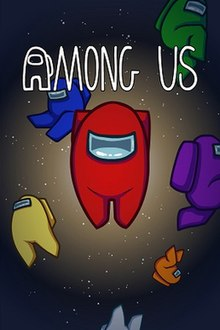
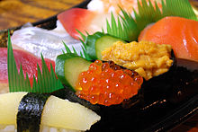
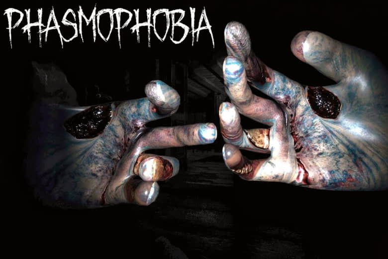
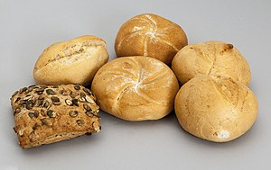

:(
Tử vong do ngộ độc sau khi ăn bánh mỳ VN 21:44 18/06/2016 Trưa 18/6, chị Huỳnh Thị Thu Ngân 26 tuổi - người bị ngộ độc sau khi ăn bánh mỳ đã tử vong tại Bệnh viện Đa khoa Lâm Đồng. Hiện vẫn còn hàng chục người khác đang điều trị ở Trung tâm y tế huyện Đức Trọng và Trạm Y tế xã Hiệp An. Trước đó, chị Ngân cùng hàng chục người dân xã Hiệp An, huyện Đức Trọng, tỉnh Lâm Đồng được đưa đến bệnh viện và trung tâm y tế địa phương cấp cứu trong ngày và đêm 15-16/6 với các biểu hiện ngộ độc thực phẩm như nôn ói, đi ngoài, tụt huyết áp, sốt cao... Tất cả bệnh nhân đều có điểm chung là đã ăn bánh mì (có nhân hoặc không nhân) mua tại tiệm Khánh Trang là quán tạp hóa khá lớn trên địa bàn. Cơ quan chức năng đã lấy mẫu bánh mì nghi gây ngộ độc để kiểm tra, hiện chưa có kết quả xét nghiệm.
=((

Technoblade, one of the most popular Minecraft video creators on YouTube, has died following a stage 4 cancer diagnosis, according to his family. He was 23. "If I had another hundred lives, I think I would choose to be Technoblade again every single time, as those were the happiest years of my life," he wrote in a message to his community about 8 hours before he died. His father read aloud the message in a YouTube video Thursday titled "so long nerds" that has reached millions of people and hit #1 on the trending page. "I hope you guys enjoyed my content and that I made some of you laugh, and I hope you all go on to live long, prosperous and happy lives because I love you guys," Technoblade wrote in his message. sssss
15 Cách Hack Nick Facebook (FB) năm 2022 tỷ lệ thành công 100%

Cách hack Facebook mà không ai biết bằng máy tính Bước 1: Đăng nhập vào tài khoản Facebook cá nhân của bạn và tìm đến người mà bạn cần hack nick. Người này phải nằm trong danh sách bạn bè của bạn thì mới có thể áp dụng được các dùng code check mật khẩu facebook. Bước 2: Đăng xuất Facebook cá nhân và chọn vào mục “Quên mật khẩu”, sau đó copy ID tài khoản mà bạn muốn hack vào ô trống. Bước 3: Nhấn vào “Đây là tài khoản của tôi” Bước 4: Chọn cài đặt lại mật khẩu bằng Email rồi nhấn “Tiếp tục”. Sau đấy nhấn F12. Click chuột phải tại ô trống để chọn “Kiểm tra”. Ngay lập tức bạn sẽ có được code hack Facebook để đăng nhập vào tài khoản mà bạn muốn hack. 2. Sử dụng ứng dụng giám sát Nếu ai đó đang tìm cách hack nick Facebook của bạn, thì công cụ giám sát như mSpy, đây là cách xem dữ liệu từ tài khoản Facebook với sự hỗ trợ của phần mềm: Đăng ký: Đăng nhập mSpy và tạo tài khoản. Đăng nhập vào tài khoản của họ: Sau khi hoàn tất quá trình, hacker cần đăng nhập vào tài khoản của mình và sau đó điền vào tất cả các chi tiết của thiết bị họ muốn theo dõi. Cài đặt ứng dụng: Sau khi đã cung cấp thông tin chi tiết của thiết bị di động hoặc thiết bị cố định mà hacker muốn theo dõi, họ cần tải xuống ứng dụng trên đó. Thông thường, các ứng dụng như vậy hoạt động tốt trên cả iOS và Android. Bắt đầu giám sát: Sau khi cài đặt ứng dụng, bạn cần phải nhấn vào tùy chọn “Bắt đầu giám sát / theo dõi”. Với ứng dụng này, họ có thể giám sát mọi thứ mà bạn thực hiện trên tài khoản Facebook của mình.
TRUE SUS
Among Us[c] is a 2018 online multiplayer social deduction game developed and published by American game studio Innersloth. The game was inspired by the party game Mafia[10][11] and the science fiction horror film The Thing.[11] The game allows for cross-platform play, first released on iOS and Android devices in June 2018 and on Windows later that year in November. The game was then ported to the Nintendo Switch in December 2020, and on the PlayStation 4, PlayStation 5, Xbox One and Xbox Series X/S in December 2021. While the game was initially released in 2018 to little mainstream attention, it received a massive influx of popularity in 2020 due to many well-known Twitch streamers and YouTubers playing it. A separate VR version of the game, Among Us VR, was released in November 2022. Among Us takes place in space-themed settings where players are colorful armless cartoon astronauts; Each player takes on one of two roles: most are Crewmates, but a small number play Impostors,[d] which appear identical to Crewmates. The goal of the Crewmates is to either identify and vote out the Impostors, or to complete all the tasks around the map; the goal of the Impostors is to covertly sabotage the mission either by killing the Crewmates before they complete all their tasks or by triggering a disaster that is not resolved in time.
=((
Sushi (すし, 寿司, 鮨, 鮓, pronounced [sɯɕiꜜ] or [sɯꜜɕi]) is a Japanese dish of prepared vinegared rice (鮨飯, sushi-meshi), usually with some sugar and salt, accompanied by a variety of ingredients (ねた, neta), such as seafood, often raw, and vegetables. Styles of sushi and its presentation vary widely, but the one key ingredient is "sushi rice", also referred to as shari (しゃり), or sumeshi (酢飯).[1] The inventor of modern sushi is believed to be Hanaya Yohei, who invented nigiri-zushi, a type of sushi most known today, in which seafood is placed on hand-pressed vinegared rice, around 1824 in the Edo period (1603–1867). It was the fast food of the chōnin class in the Edo period.[2][3][4] Sushi is traditionally made with medium-grain white rice, though it can be prepared with brown rice or short-grain rice. It is very often prepared with seafood, such as squid, eel, yellowtail, salmon, tuna or imitation crab meat. Many types of sushi are vegetarian. It is often served with pickled ginger (gari), wasabi, and soy sauce. Daikon radish or pickled daikon (takuan) are popular garnishes for the dish. Sushi is sometimes confused with sashimi, a similar dish in Japanese cuisine that consists of thinly sliced raw fish or occasionally meat.[5]
youtube hehehe

YouTube là một nền tảng chia sẻ video trực tuyến của Mỹ có trụ sở chính tại San Bruno, California. Nền tảng này được tạo ra vào tháng 2 năm 2005 bởi ba nhân viên cũ của PayPal — Chad Hurley, Steve Chen và Jawed Karim — đã được Google mua lại vào tháng 11 năm 2006 với giá 1,65 tỷ đô la Mỹ và hiện hoạt động như một trong những công ty con của Google. YouTube là trang web được truy cập nhiều thứ hai sau Google Tìm kiếm, theo xếp hạng của Alexa Internet.[8] Trang web cho phép người dùng tải lên, xem, chia sẻ, thêm vào danh sách phát, báo cáo và nhận xét về video, đăng ký người dùng khác và sử dụng công nghệ WebM, H.264/MPEG-4 AVC và Adobe Flash Player để hiển thị nhiều video đa phương tiện do người dùng và doanh nghiệp tạo ra.[2] Nội dung có sẵn bao gồm video clip, đoạn chương trình truyền hình, video âm nhạc, phim tài liệu ngắn và tài liệu, bản ghi âm, đoạn giới thiệu phim và các nội dung khác như viết blog bằng video, video sáng tạo ngắn và video giáo dục. Hầu hết nội dung trên YouTube được các cá nhân tải lên, nhưng các công ty truyền thông bao gồm CBS, BBC, Vevo và Hulu cung cấp một số tài liệu của họ qua YouTube như một phần của chương trình đối tác với YouTube. Người dùng không đăng ký vẫn có thể xem được hầu hết video ở trang, còn người dùng đăng ký được phép tải lên số lượng video vô hạn. Một số video chỉ dành cho người dùng trên 18 tuổi (ví dụ video có chứa những nội dung nhạy cảm hoặc có khả năng xúc phạm). YouTube kiếm doanh thu quảng cáo từ Google AdSense, một chương trình nhắm mục tiêu quảng cáo theo nội dung và của trang web. YouTube có YouTube Premium (trước đây là YouTube Red), một dịch vụ thuê bao cung cấp quyền truy cập vào nội dung độc quyền được thực hiện với những người dùng hiện có, và YouTube Music, một dịch vụ stream và nghe các bài hát của nghệ sĩ trên trang web. Tính đến tháng 8 năm 2019, trang web này được Alexa Internet, một công ty phân tích lưu lượng truy cập web, xếp hạng là trang web phổ biến thứ hai trên toàn cầu.[2]
youtube hehehe
Dream (real name Clay; born August 12, 1999) is an American YouTuber and Twitch streamer who is known primarily for creating Minecraft content. Dream has been active online since 2014,[2] but did not gain substantial popularity until 2019 and 2020. He is well known for his YouTube series "Minecraft Manhunt" and was also well known for his Minecraft speedruns, in which he was accused of cheating in late 2020. Dream later admitted to using game modifications, but maintained that he used them unintentionally during his single-player speedruns, intending for them to only apply during his multiplayer "challenge videos".[3][4] Content created in the Dream SMP, Dream's invite-only survival multiplayer (SMP) Minecraft server that stars content creators engaged in roleplay, has also attracted considerable attention and a popular fandom. As of September 10, 2022, his seven YouTube channels have collectively reached over 41.96 million subscribers[a] and over 3.29 billion views,[b] and his two Twitch channels have collectively gained 7.01 million followers[c] and 19.01 million views.[d] YouTube awarded Dream the Streamy Award for Gaming in both 2020 and 2021. Dream revealed his face for the first time on October 2, 2022, after six years of staying hidden in his videos.[2][5][6]
youtube hehehe
George Davidson, better known online as GeorgeNotFound and occasionally Gogy, is a member of the Dream Team, having the second most subscribers out of the three. He has been uploading current YouTube videos publicly since 2019, but has been on the platform since 2013. George is a co-founder of the Dream SMP, along with Dream
Phasmophobiae
Phasmophobia is a game made by Kinetic Games released on September 18, 2020 in Steam Early Access. It has a targeted full release year of 2021. The game is a 4 player online co-op psychological horror where you and your team members of paranormal investigators will enter haunted locations filled with paranormal activity and gather as much evidence of the paranormal as you can. You will use your ghost hunting equipment to search for and record evidence of whatever ghost is haunting the location to sell onto a ghost removal team.
banh my
Bánh Mì (tiếng Anh: bread) là thực phẩm được chế biến từ bột mì hoặc từ ngũ cốc được nghiền ra trộn với nước, thường là bằng cách nướng. Trong suốt quá trình lịch sử, bánh mì đã được phổ biến trên toàn thế giới và là một trong những loại thực phẩm nhân tạo lâu đời nhất, đóng vai trò rất quan trọng kể từ lúc ban đầu của ngành nông nghiệp. Có nhiều cách kết hợp và tỷ lệ của các loại bột và các nguyên liệu khác, và cũng có các công thức nấu ăn truyền thống khác nhau và phương thức để tạo ra bánh mì. Kết quả là có rất nhiều chủng loại, hình dạng, kích thước và kết cấu của bánh mì khác nhau. Bánh mì có thể được lên men bằng nhiều quá trình khác nhau, từ việc sử dụng các vi sinh vật tự nhiên (ví dụ như trong bột chua) cho tới cách dùng phương pháp thông khí nhân tạo với áp lực cao trong quá trình chuẩn bị hoặc nướng. Tuy nhiên, một số sản phẩm bánh mì còn lại không để lên men, hoặc vì cho sở thích, hoặc vì lý do truyền thống hay tôn giáo. Nhiều thành phần không phải ngũ cốc có thể được đưa vào bánh mì: từ trái cây và các loại hạt đến các chất béo khác nhau. Bánh mì thương mại nói riêng thường chứa các chất phụ gia, một số trong số chúng không có dinh dưỡng nhằm cải thiện hương vị, kết cấu, màu sắc, thời hạn sử dụng, hoặc để sản xuất dễ dàng hơn. Tùy thuộc vào các phong tục tập quán địa phương, bánh mì có thể được ăn với các hình thức khác nhau tại bất kỳ bữa ăn nào trong ngày. Nó cũng được ăn như một món ăn nhẹ, hoặc sử dụng như một thành phần trong chế phẩm ẩm thực khác, chẳng hạn như các món chiên được bọc trong những lớp bánh mì để không bị dính, hoặc làm thành phần chính của một bánh mì pudding, dùng làm chất độn để chèn vào răng sâu, hoặc giữ lại nước trái cây để chúng đỡ mất đi bằng cách nhỏ giọt.
rick astley
Richard Paul Astley (born 6 February 1966) is an English singer, songwriter and radio personality, who has been active in music for several decades. He gained worldwide fame in the 1980s, having multiple hits including his signature song "Never Gonna Give You Up", "Together Forever" and "Whenever You Need Somebody", and returned to music full-time in the 2000s after a 6-year hiatus. Outside his music career, Astley has occasionally worked as a radio DJ and a podcaster.[1]
the "hot" dog

Hot dog (hótđóc) là một loại đồ ăn nhanh của Mỹ. Là bánh mì (hot dog bun) kẹp xúc xích, thường có thêm mù tạt, nước sốt cà chua, hành, mayonnaise, gia vị có thể có hoặc không có dưa cải Đức (sauerkraut). Từ "dog" đã được sử dụng như từ đồng nghĩa với xúc xích từ năm 1884 và các cáo buộc cho rằng nhà sản xuất xúc xích sử dụng thịt chó đã có ít nhất từ năm 1845[1]. Vào đầu thế kỷ 20, ở Đức, việc tiêu thụ thịt chó là bình thường[2]. Những nghi ngờ xúc xích có chứa thịt chó "đôi khi chính xác".[3].
ice cream

Ice cream is a sweetened frozen food typically eaten as a snack or dessert. It may be made from milk or cream and is flavoured with a sweetener, either sugar or an alternative, and a spice, such as cocoa or vanilla, or with fruit such as strawberries or peaches. It can also be made by whisking a flavored cream base and liquid nitrogen together. Food coloring is sometimes added, in addition to stabilizers. The mixture is cooled below the freezing point of water and stirred to incorporate air spaces and to prevent detectable ice crystals from forming. The result is a smooth, semi-solid foam that is solid at very low temperatures (below 2 °C or 35 °F). It becomes more malleable as its temperature increases.